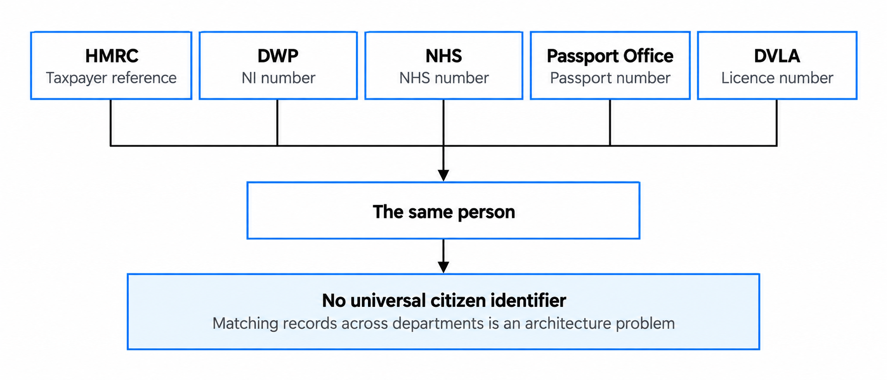
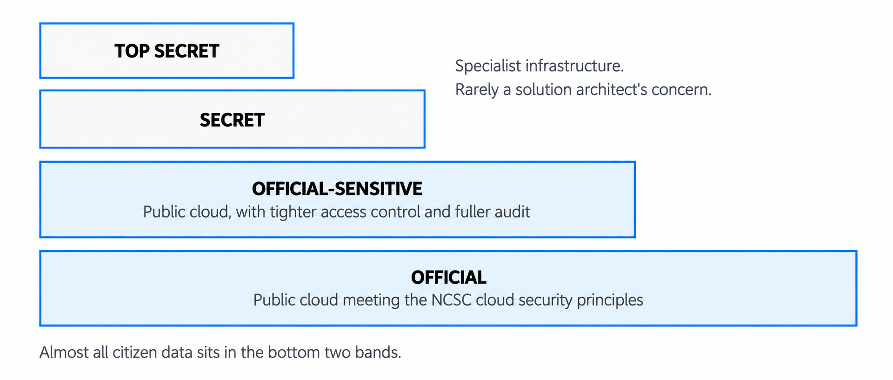
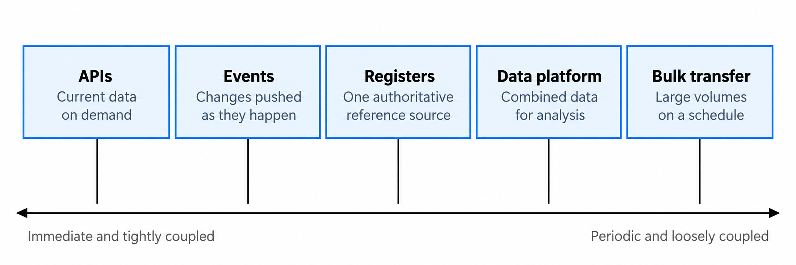
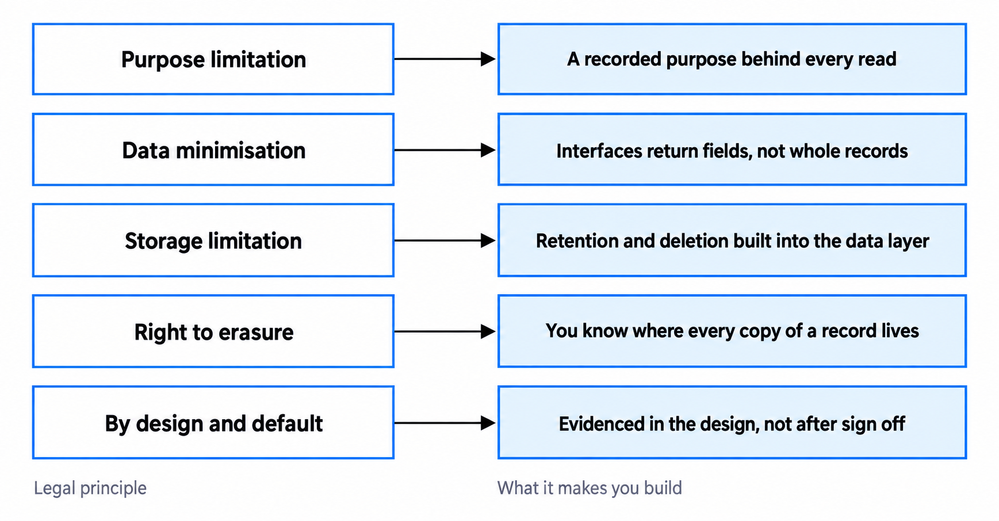
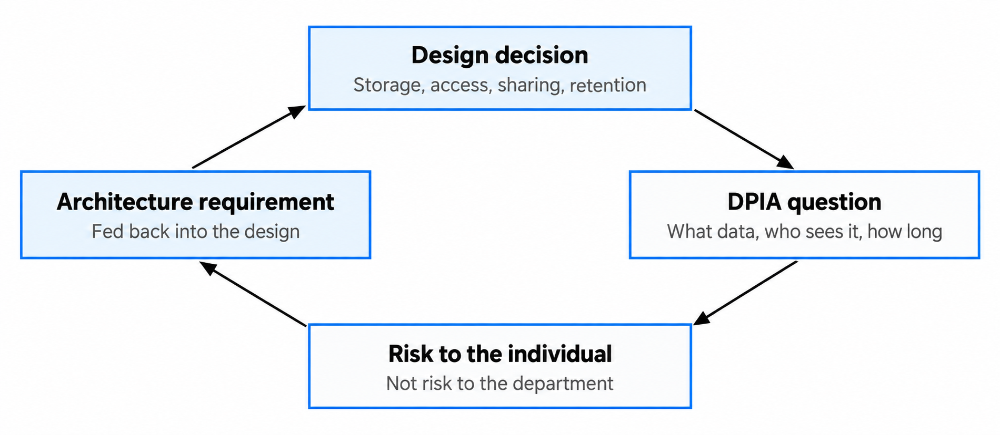

Data architecture and data sharing across government
Make every data flow purposeful, lawful and operable.
You'll come away with:
- How to turn purpose, legal authority and data protection into design constraints
- How classification, sensitivity and aggregation affect security decisions
- How to choose and govern APIs, events, batches and analytical data products
- How identity matching, quality, retention and a DPIA shape the architecture
Start with the purpose and authority
Government data sharing is not simply a connection between two systems. It is processing carried out by organisations with defined functions, responsibilities and legal constraints. Before deciding how two systems will exchange data, confirm why the data is needed, which fields are necessary and whether each organisation has the legal authority to share and use it. These decisions should shape the technical design, whether it uses an API, events or file transfer.
Avoid saying that a department “owns” personal data or that the data “belongs” to the citizen. Those phrases hide the roles that matter. Identify the controller or controllers, the processors, the organisation responsible for the source and the people the data relates to. Individuals have statutory rights; controllers remain accountable for how and why personal information is used.
You must identify and document a lawful basis before processing personal information. Public authorities often use the public-task basis for official functions grounded in law, but the correct basis depends on the purpose. Special-category and criminal-offence data can require additional conditions. The current ICO lawful-basis guidance should be applied with data-protection and legal specialists.
A data-sharing agreement is good practice because it records purpose, roles, data items, security, retention, individual-rights processes and review arrangements. It is not universally a legal requirement, although a joint-controller arrangement and some sector-specific situations do create particular obligations. Use the ICO data-sharing agreement guidance and the organisation's required governance route.
Define why the data may move before deciding how it will move.
Treat identity matching as a decision
Two services may describe the same person, organisation or location using different identifiers and different evidence. A National Insurance number, NHS number, passport number or local case reference was created for a particular context. Do not assume that one identifier is universal, that every record contains it or that matching values prove two records refer to the same entity.

Make matching rules explicit. Decide which attributes can be used, how inconsistencies are handled, what confidence is sufficient, when a person must review the result and how incorrect links can be challenged and corrected. Retain provenance and the rule or model version used. False matches can expose one person's data to another; missed matches can deny a service or produce the wrong decision.
Apply classification without inventing a fourth tier
The Government Security Classifications Policy has three tiers: OFFICIAL, SECRET and TOP SECRET. OFFICIAL-SENSITIVE is an additional marking within OFFICIAL, not a separate classification. It signals that particular care and controls are required for information that meets the policy criteria.

Classification alone does not approve a hosting model or prescribe one fixed set of product controls. Apply the relevant policy baseline, local security policy and risk assessment. Consider aggregation: a large collection of individually OFFICIAL records may warrant additional controls because compromise could have greater impact. Access should reflect need-to-know and need-to-share, supported by proportionate identity, authorisation, logging, encryption, monitoring and recovery controls.
Do not classify isolated fields and assume the rest of the service can be treated independently. Assess information assets, flows, derived data, metadata, logs, backups and operational access in context. Separation can reduce exposure when it creates a real security boundary, but it should follow the threat and impact assessment rather than a general rule.
Translate data protection into architecture
The current UK data-protection framework includes the UK GDPR, the Data Protection Act 2018 and amendments made by the Data (Use and Access) Act 2025. The ICO's data-protection principles provide a useful design checklist, but the resulting controls depend on the processing.

- Purpose and lawful basis: define each processing activity and restrict incompatible or unauthorised use.
- Data minimisation: expose, collect and retain only what is necessary for the stated purpose.
- Accuracy: retain provenance, support correction and communicate material changes where required.
- Storage limitation: implement approved retention and disposal across primary stores, replicas, exports and backups.
- Security: use technical and organisational measures proportionate to the risks to people.
- Accountability and transparency: retain the decisions, evidence and information needed to explain the processing.
The right to erasure is not absolute. It only applies in particular circumstances and has exemptions, including where processing is necessary for a legal obligation or a public task. If a valid request applies, backup data may sometimes remain until overwritten but must be put beyond use. Design a traceable process for relevant rights and use the current ICO erasure guidance rather than promising deletion from every copy in every case.
Choose a sharing pattern from the requirements
An API, event, batch transfer and analytical data product solve different problems. They do not form a simple scale from modern to legacy or from coupled to decoupled. Start with freshness, volume, availability, consumer needs, replay, correction, security, retention and operational ownership.

For APIs, follow the current government API technical and data standards: understand consumer needs, check for reusable interfaces, define a specification, control access, log sensitive-data use, version deliberately and operate the service through its lifecycle.
Events allow a source system to publish a change without calling every system that uses the information. This reduces the direct dependency between systems, but consumers still rely on the event having a clear and stable meaning. Decide whether events can be lost or duplicated, whether they must arrive in order, how they can be replayed, how corrections are issued and how the format can change without breaking consumers. You must also confirm that every subscriber is authorised to receive the data.
Batch transfer is still a sensible option for scheduled or high-volume data sharing, especially when the sending and receiving systems do not need to be available at the same time. The design must cover more than moving a file from one place to another. It should explain how files are protected, named, tracked and checked, as well as what happens when a file is late, missing, duplicated or fails during processing. It should also define how records are reconciled, when files are deleted and who is responsible for operating and supporting the transfer.
An analytical data product is useful when you need to combine information from several sources, retain historical data or run analysis without placing additional demand on operational systems. Because it may create further copies of the data, the design must make clear who is responsible for managing them. It should record where the data came from, how it was transformed, who can access it, how its quality is measured and how long it is retained. It should also show how corrections made in a source system are reflected in the analytical data.
Design the contract, not only the connection
Every data flow needs an agreed definition of what will be exchanged. This should explain what each field means, which identifiers and code lists are used, which fields are optional, and how units, dates and time zones are represented. It should also set expectations for data quality and explain how changes will be introduced without unexpectedly breaking receiving systems. Make clear who maintains this agreement, who supports the data flow and how consumers will be told about changes.
A shared exchange model can reduce the number of separate translations needed when several systems use the same concepts. If six systems exchange data directly with one another, there could be as many as 15 separate relationships. If each system translates its data into and out of one shared format, this could be reduced to six adapters. These figures are only illustrative: the actual number will depend on the direction of each flow, the protocols and message types involved, and any exceptions required by individual systems.

Use a shared model where the concepts are genuinely common and governance can keep it usable. Do not force every domain into one enterprise schema. A domain-owned contract with shared identifiers, standards and translation at clear boundaries is often easier to evolve.
Make quality and provenance operational
Do not describe a source as “the single source of truth” without saying for which attribute, purpose and effective time. One organisation may be authoritative for a legal status while another holds the best contact address for its service. Record the source, collection time, transformation and quality state so consumers can judge whether a value is suitable.
The Government Data Quality Framework uses six dimensions: completeness, uniqueness, consistency, timeliness, validity and accuracy. Select measures that matter to the service rather than reporting every dimension mechanically. Define thresholds, owners, monitoring and what happens when data falls below an acceptable level.
Plan how data-quality problems will be corrected, not just detected. Define how downstream teams report suspected errors, who investigates conflicting values and how corrected data reaches each consumer. If incorrect data may have affected earlier decisions, explain how those decisions will be identified and reviewed. Responsibility for this process must remain clear after the service goes live.
Use the DPIA while choices can still change
A Data Protection Impact Assessment is mandatory where processing is likely to result in high risk to individuals. It is not required for every government system. Screen major work involving personal data early, document the decision and complete a DPIA before high-risk processing begins. The ICO DPIA guidance identifies relevant criteria and activities.
The DPIA should describe the processing, assess necessity and proportionality, examine risks to people's rights and freedoms and record measures that address them. Its findings should create or change requirements for access, minimisation, transparency, retention, security and rights handling. Ask the Data Protection Officer for advice and record any difference of opinion.
Keep the assessment under review. A new purpose, dataset, matching method, recipient, supplier, location, retention period or automated decision may change the nature, scope, context or risk of the processing. If high risk remains after mitigation, consult the ICO before starting the processing.
Questions to ask before approving a data flow
- What outcome and specific purpose require this data?
- Which organisation is controller, joint controller or processor at each stage?
- What legal power, lawful basis and additional condition apply?
- Which fields are necessary, and what prevents wider use?
- How are identity matches made, reviewed, corrected and explained?
- What classification, markings, aggregation effects and local policies apply?
- Which sharing pattern best fits freshness, volume, availability and recovery needs?
- Who owns the contract, source quality, operation and incident response?
- Where do derived data, exports, logs, caches and backups go?
- How are retention, disposal and applicable individual rights carried out?
- Has DPIA screening happened early enough to influence the design?
- What change would require the agreement, risk assessment or DPIA to be reviewed?
The Technology Code of Practice expects government technology to make better use of data, use open standards and address security and privacy. The architecture should make the evidence behind those choices visible rather than simply stating compliance.
This guide explains general data-architecture considerations for UK central government. It does not replace legal or data-protection advice, departmental security and information-management policy, records obligations, sector-specific rules or the judgement of accountable specialists.
Last reviewed September 2026. ICO guidance is being updated following the Data (Use and Access) Act 2025, so check the current sources before relying on it.
- ICO: Lawful basis
- ICO: Data-sharing agreements
- Government Security Classifications Policy
- Data Protection Act 2018
- Data (Use and Access) Act 2025
- ICO: Data-protection principles
- ICO: Right to erasure
- GOV.UK: API technical and data standards
- Government Data Quality Framework
- ICO: Data Protection Impact Assessments
- Technology Code of Practice